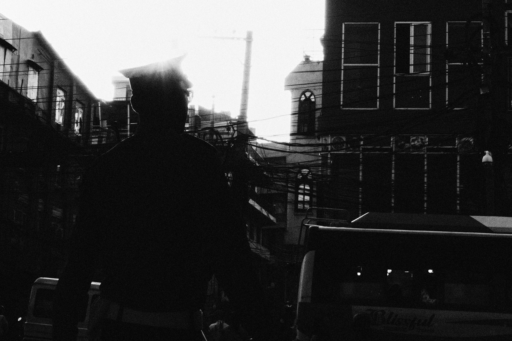

sasha karachinsky
I
photography is instant graphics—a medium that does half the work for me.
black is black and white is white: blots and empty spaces serve a single purpose—to set a rhythm for the viewer. and for the more attentive ones, to make them ask themselves a question: what am I feeling, and am I feeling anything at all? black and white alternate, creating a pulse—usually broken and uneven, like the heartbeat of a living person. contrary to popular belief, the steady pulse of music is a myth.
i enjoy destroying what I create by every visual means available to me. sometimes it irritates me. that irritation is part of the pulse too, and it is just as irregular.
make of it whatever you want.
photography is instant graphics—a medium that does half the work for me.
black is black and white is white: blots and empty spaces serve a single purpose—to set a rhythm for the viewer. and for the more attentive ones, to make them ask themselves a question: what am I feeling, and am I feeling anything at all? black and white alternate, creating a pulse—usually broken and uneven, like the heartbeat of a living person. contrary to popular belief, the steady pulse of music is a myth.
i enjoy destroying what I create by every visual means available to me. sometimes it irritates me. that irritation is part of the pulse too, and it is just as irregular.
make of it whatever you want.
II
as for the human figure, i am not interested in revealing inner states.
people seem to move through the world accompanied by a background sense of bewilderment. Most of the time they barely notice it. neither do i.
a person is part of the world's graphic structure. graphic structures owe nobody harmony, and therefore nobody happiness.
i celebrate beautiful doubt suddenly shattered by certainty, and certainty stumbling over doubt at the slightest breath of wind.
as for the human figure, i am not interested in revealing inner states.
people seem to move through the world accompanied by a background sense of bewilderment. Most of the time they barely notice it. neither do i.
a person is part of the world's graphic structure. graphic structures owe nobody harmony, and therefore nobody happiness.
i celebrate beautiful doubt suddenly shattered by certainty, and certainty stumbling over doubt at the slightest breath of wind.
selected works: lalitpur, nepal '26
kathmandu, nepal '26

←
 →
→
↑ go to the top //// write me a mail or visit instagram